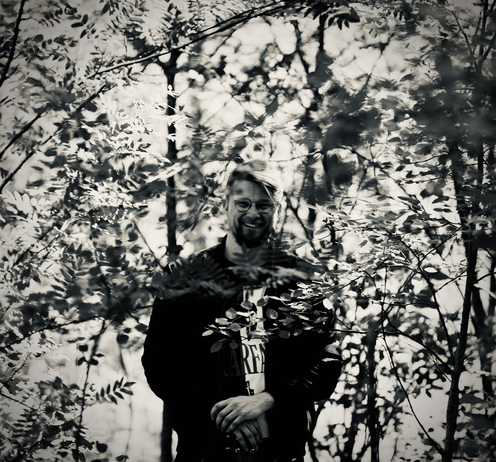
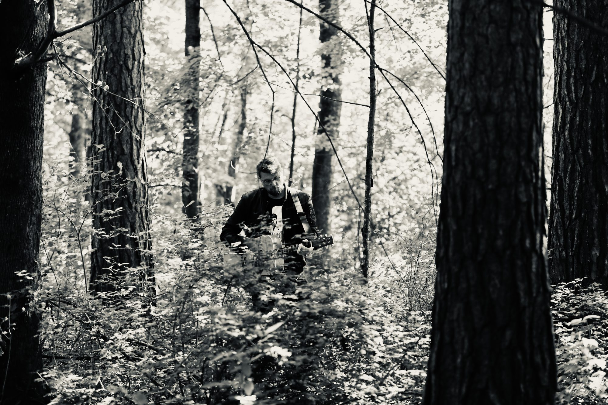
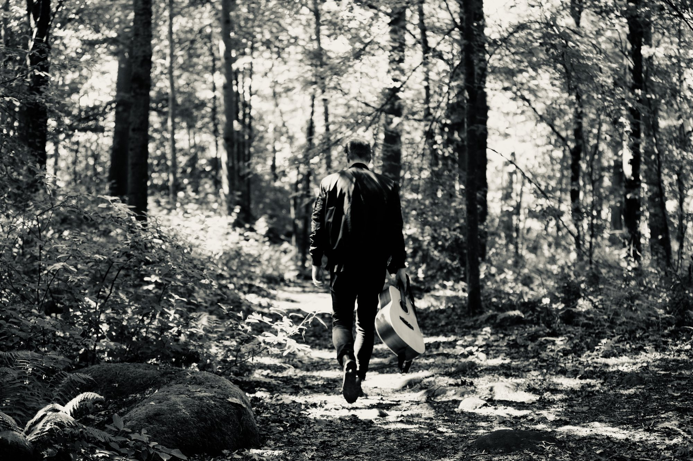

Kiva tavata. Mä oon Meretniemi.
Oon kirjoittanut lauluja toisille artisteille toistakymmentä vuotta mutta vihdoinkin sain kerättyä tarpeeksi rohkeutta laulaa niitä itse.
Arjessa vaikeat tunteet jäävät usein piiloon, koska me pelätään ettei toiset pysty ottamaan niitä vastaan. Mulle laulu on se paikka jossa voi pysähtyä niiden ääreen, vaikka vain kolmeksi minuutiksi kerrallaan.
Siksi teen lauluja.


Uutiskirje
Miten kipeän kaunis ihme elämä onkaan.
Pyhäkoulu-uutiskirjeessä kirjoitan kokemuksista, joista laulut syntyvät ja siitä, mitä matkan mutkat opettavat mulle itsestäni.
Esimerkkejä
-
{%- for t in site.data.tekstit limit:2 %}
- {{ t.otsikko }} {{ t.ingressi }} {%- endfor %}
